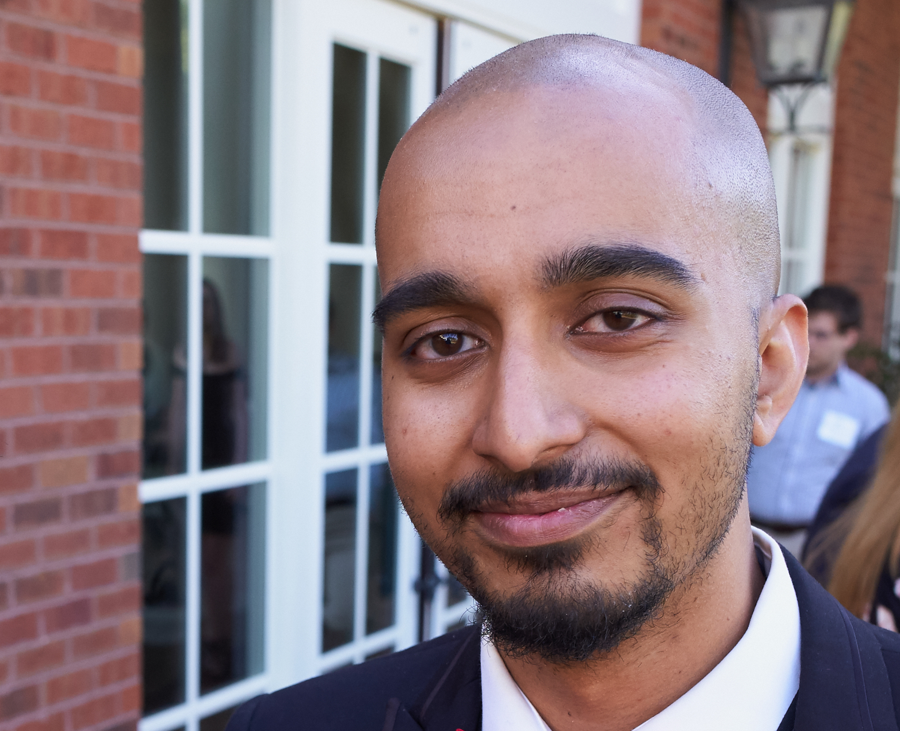

# 2020 Summary & 2021 Proposal --- # 2020 Goals --- ## 2020 Personnel Goal: - 3 postdocs, ~12 PhD, 1 MSE = .r[17] - increase gender/race/LGBTQ+/ability/etc diversity Actual - 1 postdoc, 2 staff, 10 PhD, 6 MSE, 2 ugrad, 1 rotation = .r[22] - somewhat increased diversity Summary - did not recruit as many PhD students as we wanted - did more than make up for it with MSE students Plan - convert MSE students to PhD students - up our D&I recruitment strategy --- ## 2020 Space 2020 goal: - Currently, 600 sq ft, plus anywhere in Kavli whenever we want - Goal: 3000 sq ft (TBD) 2021 goal: - no update, COVID, etc. will revisit --- ## 2020 Code Goals - .ye[sklearn] (sporf) - parth is making good progress! - .ye[skimage] (ardent) - devin "completed", probably 0.19 release - .g[networkx] (graspy) - integrated with topologix instead - .g[scipy] (mgc++) - in scipy Summary: - PFG --- ## 2020 Paper Goals .pull-left[ 1. .ye[discrim comp] 1. .ye[UF] 1. .ye[mgc-x] 1. .pu[rat iDisco] 1. .ye[k-sample testing] 1. .g[mgc] 1. .ye[characteristic kernel] 1. .ye[graph independence testing] 1. .r[deep graph science] 1. .r[urerf for anomaly detection] 1. .ye[p-values in a post truth world] 1. .ye[larval drosophila connectome] 1. .pu[seeded GM via JOFC] 1. .ye[clusternor] 1. .ye[robust LLG] 1. .g[geodesic learning] 1. .ye[ndmg] ] .pull-right[ 1. .ye[mouse paper] 1. .r[FIRM code] 1. .r[cpac] 1. .ye[manifold forests] 1. .ye[cloudreg] 1. .ye[mri batch effect] 1. .r[graph spec] 1. .ye[independence tests are basically any test] 1. .g[AR neuro] 1. .ye[FAIR neuro] 1. .ye[Lifelong forests] 1. .ye[RF testing] 1. .r[Feature Importance] 1. .ye[GLT] 1. .pu[KDD 2020] 1. .ye[batch effect] ] --- ## 2020 Papers actually .g[34 updates on google scholar], including 11 published papers .g[ 1. tingtser neuroimage 2. vivek1 neuroimage 3. tingster2 neuroimage 3. exact equiv. AStA 4. linear vs deep NComms 5. covid1 JCI 6. autism Biological Psychiatry 7. big data review AR Neuroscience 1. statical connectomics AR Stats 8. bagging Neuroimage 9. mgc JASA ] --- ## 2020 Extra papers - A few students wrote papers without my knowledge - Recall, my job is to support you to maximally thrive - So, this raises some questions<br> - Do you all feel like you are making sufficient progress on the projects we are doing? - Are the projects sufficiently motivated to keep you occupied? - Are there other projects you'd like to work on with me or other faculty members? If your answer to the above questions are yes, yes, no, at any point, please talk to me so I can help find more suitable projects. It is literally my job. --- ## 2020 Papers Summary: - I don't have an easy way of seeing which papers are accepted but not yet on google scholar because we are mid-website updates - we have made significant progress on lots of papers - we started a bunch of papers that we did not foresee - we did not finish a bunch of papers Plans: - focus on faster turn around time between reviews & resubmitting - you all get 1 year more senior - when i am in critical path, .ye[always] schedule a meeting with me --- ## 2020 Overarching Goals 1. Lifelong learning (in brains and machines) 2. Deep Graph Science book Actual: - 2 papers, hopefully both (re-) submitted this month - book starting in earnest 2021.Q1 --- ## 2020 Summary - i'm personally feeling a bit isolated from the lab - despite COVID, lot of progress on lots of papers - we did submit three $20M+ grants on AI4BI - we did start #LearningSalon - we did make progress on getting you summer internships --- ## 2021 Some thoughts 1. connectomes: continue to determine and teach the best ways to learn about brains using connectomes+attributes (+behavior+physiology+morphology+gene expression+....) 2. from 'lifelong learning' → `AI4BI`: continue to think deeply and publish about what BI can do that modern AI (specifically Deep Learning) cannot, which includes: - lifelong learning - causal inference/structure learning 3. do so in fashion that aligns with our values of open/democratic science (ie, D&I) 4. update processes to facilitate more effectively achieving these goals --- ### 2021 Personnel Process jovo:<br> - speak at 1 HBCU / month (thanks @tommy) - start [MIT MITES](https://oeop.mit.edu/programs/mites) like program here on AI4BI called BRIDGE - reached out to all the diversity student groups at JHU - started 'Learning Salon' 1 credit class in spring - I reached out to CS, AMS, biostats, ECE, PBS, & CogSci to request access to diversity candidates interested in data science --- ### 2021 Personnel Process - want to help with BRIDGE? - want to help review PhD applicants? - want to volunteer to advertise open PhD positions in the fall in various places that target diveristy pools (eg, BlackinNeuro, QueerinAI, etc.)? - please consider enrolling in [JHU safe zone training](https://studentaffairs.jhu.edu/lgbtq/education/safe-zone/) and list yourself as an [ally](https://studentaffairs.jhu.edu/lgbtq/education/safe-zone/ally-directory/). think about joining a lab as a minority or LGBTQ+, and the possibility of entering into a lab in which .ye[everyone] has gone through some degree of diversity training. - think about how to make new applicants all feel welcome at our lab for virtual visits - co-organize some workshops on AI4BI - consider lab policy: each 3rd+ PhD student "must" mentor a URM/minority/disability ugrad for X duration (eg, a summer, a year, until graduation) anything else?<br> volunteers? --- ### 2021 Personnel Goals - ≥ 2 URM/minority/disability PhD students (can pull from many different departments) - get 5 URM/minority/disability ugrads from JHU engaged in lab NLT end of summer 2021. anything else?<br> volunteers? --- ### 2021 Code Process<br> - all "core" repo's adopt best [D&I practices](https://github.com/microsoft/graspologic/issues/531) - graspy, hyppo, proglearn, m2g, brainlit, anything else? PRs:<br> 1. mclust in sklearn - tingshan 5. sporf in sklearn - parth 2. honest trees in sklearn - eva 2. ase in scipy - ali 3. dimSelect in scipy - ali 5. connectal coding in NMA (1-2 days of content) - ? anything else? <br> volunteers? --- ## 2021 Radically open science 1. radically open lab meetings - post link to twitter for thursday content meetings 2. radically open internal peer review - when you believe your paper is ready for submission, you post to [osf.io/preprints](https://osf.io/preprints/), and we/others provide feedback using [hypothesis](https://web.hypothes.is/) 3. radically open jovo review/feedback - i no longer accept article referee requests, rather, I set up a time online for which anybody can reserve me, and I specifically advertise to marginalized communities --- ### 2021 Paper process updates 1. for all papers currently pre-prints but not currently submitted anywhere ([link](https://docs.google.com/spreadsheets/d/13Ne2ah_vyo6aj2A8SfxL64zMjL-YYuW1Ir6DdnLkSno/edit?usp=sharing)), resubmit them NLT Q1 of 2021 1. post it to [osf.io/preprints](https://osf.io/preprints/) when you believe it is ready, feedback can be provided publicly or privately 1. schedule meeting with me that week for 1 hr to review paper 3. [new slide format](https://files.slack.com/files-pri/T0ATB8R52-F01G7HTG4GN/screen_shot_2020-12-08_at_9.48.08_am.png) to remind us of the appropriate meta-data 2. upon receiving .ye[journal] feedback on a paper, 1st author has 1 quarter to revise and resubmit, there or elsewhere, assuming he/she/they are still lab members, if not, that responsibility falls to the 2nd listed author 4. more actively engage cep and students for more efficient collaborative work --- ### 2021 Paper Goals 1. everything in pre-print now is under review NLT than Q1 2021 2. all students with a thesis requirement commit to 1st author paper to be submitted in 2021 (to be documented in weekly slides) --- ### 2021 AI Paper Goals (with cep) 6. PLX are consistent - ali 9. PLF without data storage - jayanta 1. deep learning is the worst model - jong 1. kernel density graphs - will 1. prediction/explanation - Mike 1. UF testing - mike/rebecca/sambit 1. task robust PLX - will/david/eva/william 5. RF vs. DN - ? 4. urerf2 - ? 7. morf2 - ? 8. Sequential PLX - ? 1. causal dcorr (has applications) - ? 2. causal inference with graphs (has applications) - ? anything else? <br> volunteers? --- ### 2021 BI Paper Goals (with cep) 1. drosophila connectome - pedigo 3. connectome heritability - jaewon 4. connectome batch effects - eric 5. meditation - ronan 2. connectocross - ? anything else? <br> volunteers? --- ## [Updated agreements](https://github.com/neurodata/neurodata.io/pull/417/files) --- class: middle # .center[What else?] --- ## Acknowledgements <br> <div class="small-container"> <img src="faces/yummy.jpg"/> <div class="centered">yummy</div> </div> <div class="small-container"> <img src="faces/lion.jpg"/> <div class="centered">lion</div> </div> <div class="small-container"> <img src="faces/violet.jpg"/> <div class="centered">baby girl</div> </div> <div class="small-container"> <img src="faces/family.jpg"/> <div class="centered">family</div> </div> <div class="small-container"> <img src="faces/earth.jpg"/> <div class="centered">earth</div> </div> <div class="small-container"> <img src="faces/milkyway.jpg"/> <div class="centered">milkyway</div> </div> <!-- <div class="small-container"> <img src="faces/cep.png"/> <div class="centered">Carey Priebe</div> </div> <div class="small-container"> <img src="faces/randal.jpg"/> <div class="centered">Randal Burns</div> </div> <div class="small-container"> <img src="faces/cshen.jpg"/> <div class="centered">Cencheng Shen</div> </div> --> <!-- <div class="small-container"> <img src="faces/mim.jpg"/> <div class="centered">Michael Miller</div> </div> <div class="small-container"> <img src="faces/jeremias.png"/> <div class="centered">Jeremias Sulam</div> </div> <div class="small-container"> <img src="faces/dtward.jpg"/> <div class="centered">Daniel Tward</div> </div> --> <div class="small-container"> <img src="faces/jesus.jpg"/> <div class="centered">Jesus Arroyo</div> </div> <div class="small-container"> <img src="faces/tommy_athey.jpg"/> <div class="centered">Tommy Athey</div> </div> <div class="small-container"> <img src="faces/ebridge.jpg"/> <div class="centered">Eric Bridgeford</div> </div> <div class="small-container"> <img src="faces/vikram.jpg"/> <div class="centered">Vikram Chandrashekhar</div> </div> <div class="small-container"> <img src="faces/jaewon.jpg"/> <div class="centered">Jaewon Chung</div> </div> <div class="small-container"> <img src="faces/devin.jpg"/> <div class="centered">Devin Crowley</div> </div> <div class="small-container"> <img src="faces/jayanta.jpg"/> <div class="centered">Jayanta Dey</div> </div> <div class="small-container"> <img src="faces/vivek.jpg"/> <div class="centered">Vivek Gopalakrishnan</div> </div> <div class="small-container"> <img src="faces/rguo.jpg"/> <div class="centered">Richard Guo</div> </div> <div class="small-container"> <img src="faces/hayden.png"/> <div class="centered">Hayden Helm</div> </div> <div class="small-container"> <img src="faces/ross.jpg"/> <div class="centered">Ross Lawrence</div> </div> <div class="small-container"> <img src="faces/loftus.jpg"/> <div class="centered">Alex Loftus</div> </div> <div class="small-container"> <img src="faces/meghana.png"/> <div class="centered">Meghana Madhya</div> </div> <div class="small-container"> <img src="faces/ronak.jpg"/> <div class="centered">Ronak Mehta</div> </div> <div class="small-container"> <img src="faces/disa.jpg"/> <div class="centered">Disa Mhembere</div> </div> <div class="small-container">  <div class="centered">Sambit Panda</div> </div> <div class="small-container"> <img src="faces/jesse.jpg"/> <div class="centered">Jesse Patsolic</div> </div> <div class="small-container"> <img src="faces/pedigo.jpg"/> <div class="centered">Ben Pedigo</div> </div> <div class="small-container"> <img src="faces/powell.jpg"/> <div class="centered">Mike Powell</div> </div> <div class="small-container"> <img src="faces/ronan.jpg"/> <div class="centered">Ronan Perry</div> </div> <div class="small-container"> <img src="faces/bijan.jpg"/> <div class="centered">Bijan Varjavand</div> </div> <div class="small-container"> <img src="faces/alig.jpg"/> <div class="centered">Ali Geisa</div> </div> <div class="small-container"> <img src="https://github.com/neurodata/neurodata.io/blob/deploy/source/images/people/jong_shin.jpg?raw=true"/> <div class="centered">Jong Shin</div> </div> <div class="small-container"> <img src="https://github.com/neurodata/neurodata.io/blob/deploy/source/images/people/jong_shin.jpg?raw=true"/> <div class="centered">Tingshan Liu</div> </div> <div class="small-container"> <img src="https://github.com/neurodata/neurodata.io/blob/deploy/source/images/people/will_levine.jpg?raw=true"/> <div class="centered">Will Levine</div> </div> <div class="small-container"> <img src="https://github.com/neurodata/neurodata.io/blob/deploy/source/images/people/rebecca_yin.jpg?raw=true"/> <div class="centered">Rebecca Yin</div> </div> <div class="small-container"> <img src="https://github.com/neurodata/neurodata.io/blob/deploy/source/images/people/kaleab_alem.jpg?raw=true"/> <div class="centered">Kaleab Kinfu</div> </div> <div class="small-container"> <img src="https://carta.anthropogeny.org/sites/default/files/styles/thumbnail__150x150_/public/pictures/picture-10262-1503535605.jpg?itok=unQySxL9"/> <div class="centered">Javier How</div> </div> <div class="small-container"> <img src="https://static.wixstatic.com/media/290941_461effbbe93b46209f8907fc217aebc6~mv2.jpg/v1/fill/w_708,h_960,al_c,q_85,usm_0.66_1.00_0.01/290941_461effbbe93b46209f8907fc217aebc6~mv2.webp"/> <div class="centered">Eva Yezerets</div> </div> <div class="small-container"> <img src="https://github.com/neurodata/neurodata.io/blob/deploy/source/images/people/ali_saad.jpg?raw=true"/> <div class="centered">Ali Saad-Eldin</div> </div> </div> <!-- <img src="images/funding/nsf_fpo.png" STYLE="HEIGHT:95px;"/> --> <!-- <img src="images/funding/nih_fpo.png" STYLE="HEIGHT:95px;"/> --> <!-- <img src="images/funding/darpa_fpo.png" STYLE=" HEIGHT:95px;"/> --> <!-- <img src="images/funding/iarpa_fpo.jpg" STYLE="HEIGHT:95px;"/> --> <!-- <img src="images/funding/KAVLI.jpg" STYLE="HEIGHT:95px;"/> --> <!-- <img src="images/funding/schmidt.jpg" STYLE="HEIGHT:95px;"/> -->